Up: VMD Tutorial
Previous: Multiple Molecules and Scripting
Subsections
Trajectories, Macros and Labels
In this unit, you will learn how to load trajectories, create
macros, place labels on atoms and bonds, and calculate the RMSD of a
trajectory using a simple tcl scripts. At the end, you should determine if
the ubiquitin system is equilibrated by looking at RMSD plots.
Loading trajectories
You will now learn to load the time evolving coordinates of a
system, called trajectories. You will be able to see a movie of your
system.
Trajectory files are normally binary files that contain several
sets of coordinates for the system. Each set of coordinates corresponds to
one frame in time. An example of trajectory files are DCD files. The
trajectory files do not contain the information of the system contained in
the protein structure (PSF) file, so we need to load first the parameter
file, and then add the trajectory data to this file, as explained in Unit 2.
- 1
- Start a new VMD session.
- 2
- Load the PSF file of the system ubiquitin.psf, as done in
Unit 2.
- 3
- In the Molecule File Browser window, click on
the Browse button, making sure that ubiquitin.psf is
selected on the menu. Browse for pulling.dcd, click OK and click on the Load button again. You will be able to see the frames as they are
loaded into the molecule.
- 4
- After the trajectory finishes loading, you will be will be looking at the last frame of your trajectory. To go to the
beginning of the trajectory, you will use one of the Animation Tools, that
will be explained extensively later in the tutorial. In the Main
menu, click on the button in the lower left.
- 5
- Choose Graphics 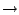 Representations menu item. In the Drawing Method pulldown menu, select Tube, and in the Selected Atoms
window, type protein.
- 6
- In the same menu item, create another representation by clicking on
the Create Rep button. In the Drawing Method pulldown menu, pick
Lines, and in the Selected Atoms window, type water. For now, turn
off this representation by double-clicking on it.
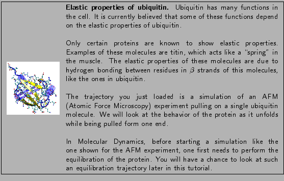
In the next section, you will learn how to create representations
with a useful feature called macros. Once you create some
representations relevant to this trajectory, the following section will
teach you how to use the Animation Tools to look at trajectories.
Macros
You will now create similar representations to the ones you learned
in Unit 1. While creating these representations, you will learn
macros. A macro is text that represents a selection. It is useful to create
macros when you use certain selections often. Macros are created with the
atomselect command you learned in unit 2.
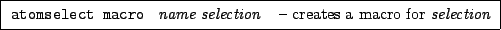
Ubiquitin has a mixed 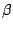 sheet with five strands. The sheet play a major role in the
unfolding of the protein. To create a macro for these strands:
- 1
- Open the Tk Console window by choosing the Main Extensions Tk Console.
- 2
- In the Tk Console window, type:
| atomselect macro bstrand1 {protein and resid 2 to 6 } |
|
This will create a macro for the first strand, which includes
residues 2 to 6.
For the other strands, you will find out which residues belong to
them by using the sequence viewer introduced in Unit 1, and then
create similar macros:
- 3
- Make sure you are in the first frame of the trajectory, as STRIDE (the program that calculates secondary structure in VMD) will determine the structure on that frame.
- 4
- Choose the Extensions Sequence Sequence Viewer menu item.
As you learned in Unit 1, the second color column corresponds to
structural features of the protein. The sections in yellow correspond to the
strands.
- 5
- With the mouse, click and drag to highlight the second
strand. This action will create a representation in the Graphics Representations window.
- 6
- In the Graphics Representations window, click
on the new representation. The text corresponding to the selection is
displayed on the Selected Atoms window. You should have (
chain U and resid 12 13 14 15 16 ).
- 7
- Use this text to create a new macro by typing in the Tk Console:
| atomselect macro bstrand2 { chain U and resid 12 13 14 15 16 } |
|
This will create a macro called bstrand2 that will contain residues
12 to 16 of chain U, which corresponds to the protein.
- 8
- Note that the sequence viewer extension locates five strands. You have created macros for the first two; create similar macros for the other three strands
using the sequence extension as done for bstrand2.
Once a macro is created, you can refer to it both in the Tk Console, and
in the Representations selections.
Macros you have created and other macros that come with VMD can be
seen in the Selections tab of the Graphical
Representations window. The macros are listed in the Singlewords window. Clicking on a macro will show its definition in
the Macro Definition window. Double-clicking on it will select
it and put its definition on the Selected Atoms form.
- 9
- Delete the representation created by the sequence viewer.
You will now create a representation with the third and fifth strands:
- 10
- In the Graphics Representations menu item, click on the Create Rep button.
- 11
- In the Selected Atoms window, erase the text that appears there.
- 12
- Click in the Selections tab. Browse in the Singlewords form until you find your newly created macros.
- 13
- Double-click on bstrand3, click the button or and then double-click on bstrand5 (Fig. 16). Then, click on the
Apply button.
- 14
- In the Draw Style tab, choose a Cartoon representation
for this selection and color it yellow. You should now see the
sheet.
- 15
- Now, create a similar representation with the other three
strands. Do this by clicking on the Create Rep button.
Now, in the Selected Atoms form, type:
bstrand1 or bstrand2 or bstrand4
Typing them directly works too!
Figure 16:
Macros are listed in the Selections tab of the
Graphical Representations Menu.
| 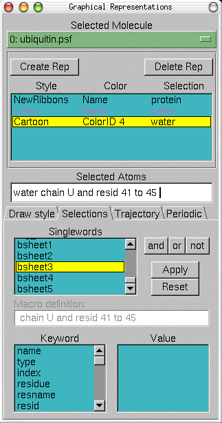 |
Noticed something strange? You only see two strands! This is because VMD does not draw strands that are only two residues long. bstrand4 contains only two residues. In other configurations of the molecule, the calculated strand might include another residue, and then the strand would be drawn.
- 16
- In the Graphical Representations window, choose the
representation for protein. In the Atom Selections window,
substitute the text protein for
protein and not betasheet.
As you can see, macros can be very useful. When saving your work in
a saved state, macros are included in the saved state file.
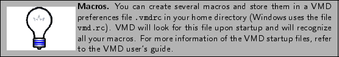
To finish this section, you will create a very interesting
representation, that shows a key feature of the trajectory we are looking
at. This is an H-bonds representation.
- 17
- Create a representation with the selection betasheet and
backbone, choose the Hbonds drawing method, and color it red using the Color ID Drawing Method. In the options, set Distance Cutoff to 3.2, Angle Cutoff to 30 and Line Thickness
to 5.
You can now appreciate the most important features of ubiquitin for
this unfolding trajectory. Your protein should now look similar to the one
in Fig. 17.
- 18
- Save a VMD state of this session, so if you want to come back and
keep on working in this tutorial, you don't have to work through those
representations again. Do this with the File Save
State... menu item, as done in Unit 1.
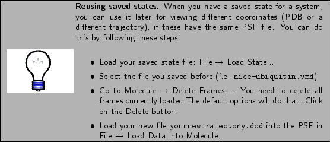
Figure 17:
Ubiquitin with key secondary structure features
highlighted
| 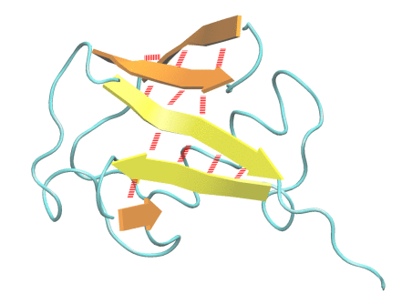 |
Main Menu Animation Tools
Now that you have nice representations, you will be able to observe
features of your trajectory. The Animation Tools help you do that. The
Main Menu includes all the Animation Tools you need for navigating
through your trajectories. They are located at the bottom of the Menu
(Fig. 18).
- 1
- Try using the button to jump to the end of the
trajectory and go back to the beginning with the
button. You can see the final and initial states of the trajectory, that
correspond to the unfolded and folded states of the protein.
Figure 18:
Animation Tools
| 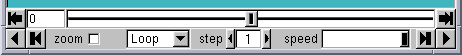 |
- 2
- Turn on again the water representation. Go to the VMD Main window and choose
Graphics Representations menu item.
Double-clicking on the representation with the text water will turn
it on.
You can click on the slider 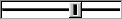 and drag it
back and forth to navigate through your trajectory. You can stop at
anytime you want, or go at the speed you need. This is helpful when you
are looking at a trajectory and want to spot the time when something
interesting happens.
- 3
- Using the slider, observe the behavior of the water around the
protein at the beginning of the trajectory.
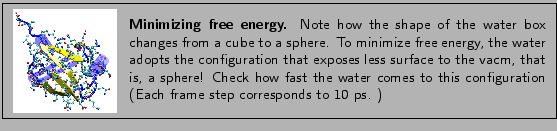
- 4
- Now, remove the Water Representation from the
Representations form by double clicking on it to be able to give the
protein a closer look. Slide through the trajectory to look at the protein
unfold. Do you notice any features?
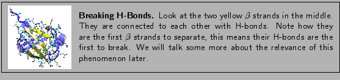
On the lower part of the Animation tools, you will find all
the tools necessary to play an animation without using the slider. This is
done with the Play buttons, that go forward and backward.
- 5
- Play the trajectory backwards. Do you think this is the way the
protein would fold in nature?
There are two ways to change the speed of your animation. You can
adjust the speed of the play using the Speed Slider. You can also
adjust the step size. This is done using the Step Window. If this
step is set to 3, the animation will show every 3rd frame, so it will make
it faster.
- 6
- Set the step to 5, and play the trajectory. Note that it plays
faster, but it also looks less smooth than before. However, this can come
handy if you are looking at long trajectories.
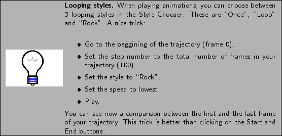
You can also jump to a frame in your trajectory, by entering the frame number in the window at the left of the Animation Tools.
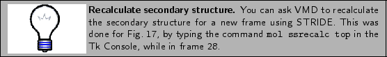
NOTE: The Animation Tools you learned cycle through the frames of
the Top molecule, but apply to all Active molecules.
Labels
In VMD, you can place labels to get information on a particular
selection. We will now make use of those labels for fun and profit. Labels
are selected with the mouse. In this example, we will cover labels that can
be placed on atoms and bonds, although angle and dihedral labeling are also
possible.
- 1
- Choose the Mouse Labels Atoms
menu item.
The mouse is now set to ``Display Label for Atom'' mode. You can now
click on any atom on your molecule and a label will be placed into this
atom. Clicking again on it will erase the label.
We will now try the same for bonds.
- 2
- Choose the Mouse Label Bonds
menu item. This selects the ``Display Label for Bond'' mode.
You will make a VDW Representation for the 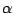 carbon of Lysine 48 and of the C terminus. In the pulling simulation, the former is kept fixed, and
the latter is pulled at constant force of 500 pN.
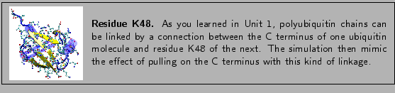
To find out the index of these atoms:
- 3
- Make a selection including these two atoms, by typing in the Tk Console:
set sel [atomselect top "resid 48 76 and name CA"]
- 4
- Get the indices:
$sel get index
This command should give the indices 770 1242.
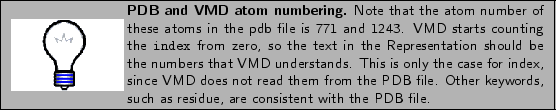
- 5
- Create a VDW Representation with selection index 770 1242.
- 6
- Now that you can see them, click on both atoms (one after the
other). You should get a line connecting the two atoms. The number
appearing next to the line is the distance between the two atoms in
angstroms (Fig. 19).
Figure 19:
Bond selection of fixed and pulled atom in
simulation. Both atoms selected display labels in black. The bond is shown
in blue, with the value of the distance between the atoms in angstroms
displayed.
| 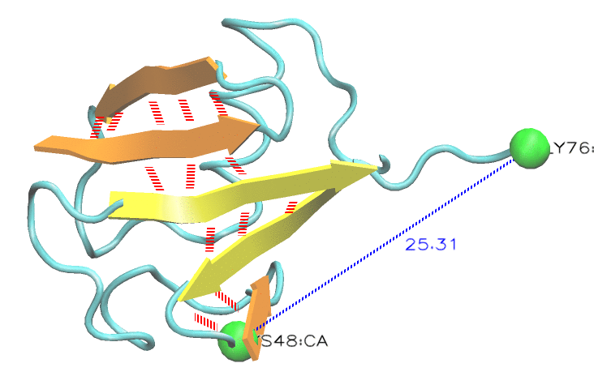 |
The value of the distance corresponds to the current frame.
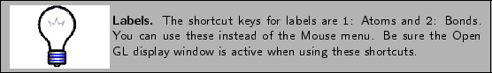
- 7
- There are more things you can do with labels, in the Graphics Labels menu item. In the left side of the window (Fig. 20),
there is a pull-down menu where you can choose the type of label (Atoms,
Bonds, Angles, Dihedrals). For now, keep it in Atoms. You can see the list
of atoms for which you made a label.
Figure 20:
Label window.
| 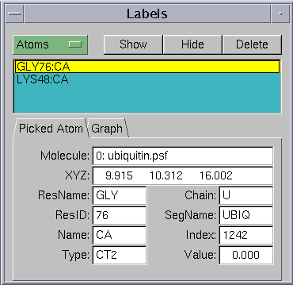 |
- 8
- Click on one of the atoms. You can see all the information of the
atom displayed. You can delete, hide, or
show the label by clicking on these buttons.
Note that this information is useful to make selections. The
information about the atom corresponds to the current frame, and is updated
as the frame is changed.
- 9
- Now, in the Label window, choose the label type Bonds, and select the bond you labeled. Note
that the information given corresponds to only the first atom in the bond,
but the number in the Value field corresponds to the length of the
bond in angstroms. Click on the Graph tab. Select the bond you labeled between atoms
770 and 1242. Click on the Graph button. This will create the
plot of the distance between these two atoms over time. You can also save
this data to a file by clicking on the Save button.
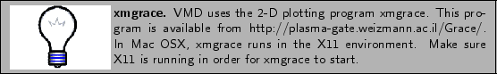
- 10
- You can now close xmgrace.
Figure 21:
Label window Plot of selected bond over time
created with the Graph button.
| 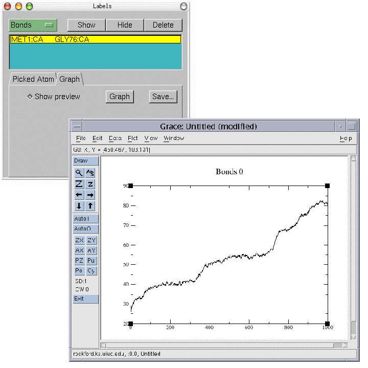 |
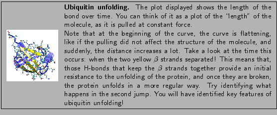
An Example Tcl Script: Calculating the RMSD of a trajectory
VMD is a powerful tool for MD analysis. In this section you will
use tcl scripts to perform analysis of trajectories. You will load a new
trajectory, the equilibration of the ubiquitin system. You will use a short
script to calculate the RMSD of the protein during the MD run, and
determine if the system is equilibrated and ready to simulate.
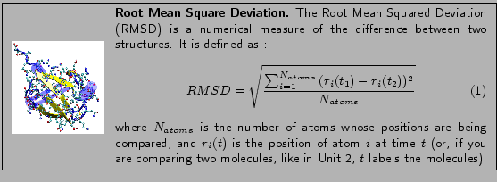
- 1
- Delete the current trajectory. Select the only molecule by clicking it on the Main window. Go to Molecule Delete Frames.... The default values on this window
will delete the whole trajectory. Click on the Delete button.
- 2
- Load the equilibration trajectory into the psf file by going to the
File Load Data Into Molecule. The file is equilibration.dcd.
- 3
- Turn on the water representation and take a look at the trajectory with the
Animation tools that you learned before.
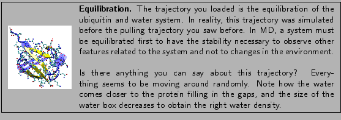
Now you will find out how to determine if the protein is
equilibrated. One important factor to determine this is looking at the RMSD
of a protein in a trajectory.
- 4
- The script we are going to use is called rmsd.tcl. This is
the script content:
| set outfile [open rmsd.dat w] |
|
| set nf
[molinfo top get numframes] |
|
| set frame0 [atomselect top "protein
and backbone and noh" frame 0] |
|
| # rmsd calculation loop |
|
| for
{ set i 1 } { $i $nf } { incr i } { |
|
| set sel [atomselect top "protein and backbone and noh" frame $i] |
|
| set all [atomselect top all frame $i] |
|
| $all move [measure fit $sel $frame0] |
|
| puts
$outfile "[measure rmsd $sel $frame0]" |
|
|
|
| |
|
| close $outfile |
|
- 5
- The script does the following:
- Open file rmsd.dat for writing
| set outfile [open rmsd.dat w] |
|
- Get the number of frames in the trajectory and assign this value to
the variable nf
| set nf [molinfo top get numframes] |
|
- Select the first frame of the molecule to be the one other frames
will compare to. The selection contains the atoms in the backbone of
the protein, excluding hydrogens:
| set frame0 [atomselect top "protein and
backbone and noh" frame 0] |
|
- Text after # denotes comment.
- Loop over all frames in the trajectory:
| for { set i 1 } { $i $nf } { incr
i } { |
|
- Make the same selection as before for the current frame (the
frame to be compared).
| set sel [atomselect top "protein and backbone
and noh" frame $i] |
|
- Make a selection with all atoms
| set all [atomselect top all frame $i] |
|
- Calculate the matrix that will fit both selections. Apply this
matrix to the second selection to align the molecules:
| $all move [measure fit $sel $frame0] |
|
- Calculate the RMSD value between these two selections, and write
it to file:
| puts $outfile "[measure rmsd $sel
$frame0]" |
|
You can use the script for the system to test for equilibration.
- 6
- Type source rmsd.tcl in the Tk Console. This will perform
all the commands in the script. The script will write a file rmsd.dat that will contain the value of the RMSD of the protein
backbone against time.
Outside of VMD, you can use some plotting program to see this data.
Examples of these are gnuplot, xmgrace, excel, Mathematica.
- 7
- Use one of the above programs to plot the file rmsd.dat (For
example, in Unix, you can type xmgrace rmsd.dat in a terminal). Can
you see the RMSD curve flattening? This means your system is
equilibrated!
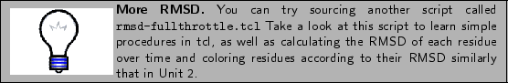
This ends the VMD tutorial. We hope that you learned a lot with
it, and that you will make a great use of all the capabilities VMD has to
offer.
Up: VMD Tutorial
Previous: Multiple Molecules and Scripting
vmd@ks.uiuc.edu